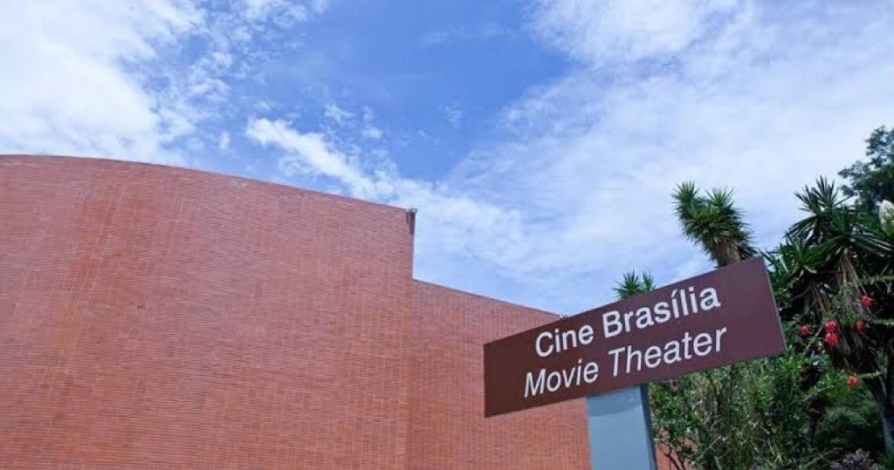
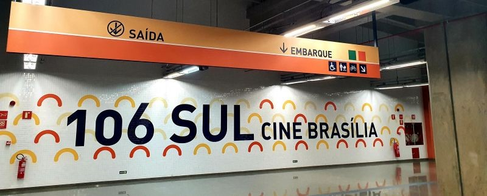
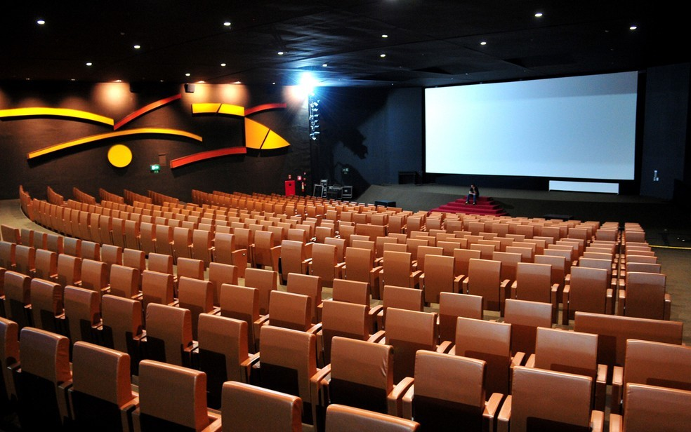

Accessibility at Cine Brasília
About Cine Brasília
Cine Brasília was conceived as a neighborhood cinema to accompany the model project of the first residential blocks of Brasília. It is the oldest cinema in the capital and was inaugurated on April 22, 1960, one day after the city’s founding.

The building was designed by Oscar Niemeyer and aligns with the city's original aesthetic proposal: a bucolic, tree-lined space with ample room. It’s an old-fashioned cinema, not located in a shopping mall, as is usually the case.
Cine Brasília is one of the most important film exhibition centers in Latin America. It screens feature and short films, organizes thematic festivals and exhibitions, holds children’s sessions, and offers lectures and educational activities with prominent national and international figures. Its programming is diverse, having shown films from 52 countries in more than 30 languages.
It has three levels of heritage protection: it is a district, federal, and world heritage site.
Cine Brasília has the largest cinema hall in the Federal District, with a capacity of 619 spectators. The schedule is announced weekly on its website and social media.
Accessibility at Cine Brasília
Accessibility at Cine Brasília starts with its location. Situated in the Plano Piloto between Blocks 106 and 107 South, the cinema is easily accessible by metro, through the 106 South station, or by buses that pass through the Eixinho.

In addition, its physical accessibility is evident on the street, with ramps of appropriate inclination for access. The site has a large parking area with six spaces reserved for people with physical disabilities. Cine Brasília also has a tactile paving route to guide visually impaired visitors, extending from pedestrian sidewalk access points to the building’s interiors.
The cinema hall has comfortable seats for obese people, and there are 16 reserved spaces for people in wheelchairs in different sections, with reserved companion seats next to each one. Guide dogs are allowed.
